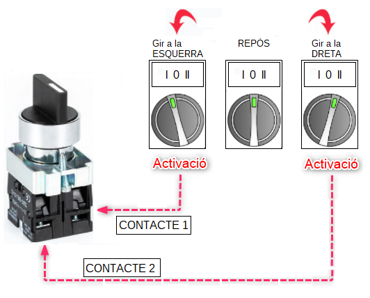

Un selector de tres posicions és un dispositiu de commutació manual amb tres posicions estables (I-0-II) que té la capacitat de commutar dos circuits elèctrics de manera independent però no al mateix temps.

A continuació podeu veure el funcionament d'un selector de 3 posicions amb el CONTACTE 1 (NC) associat al circuit 1 i el CONTACTE 2 (NO) associat al circuit 2:

- Existeix la posició de repòs ("0"): El circuit 1 està en ON (CONTACTE 1 NC) i el circuit 2 està en OFF (Contacte 2 NO).
- Sols es pot activar un dels dos circuits:
- Posició I, s'activa el CONTACTE 1 (NC) i el circuit 1 passa a l'estat OFF
- Posició II, s'activa el CONTACTE 2 (NO) i el circuit 2 passa a l'estat ON.
En un Selector de tres posicions els dos circuits podem treballar a tensions diferents, ja que els terminal dels blocs de contactes són independents entre ells.